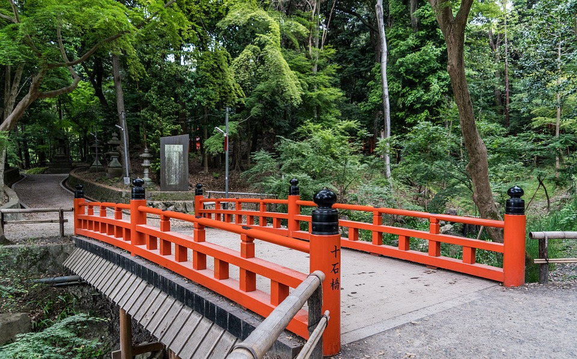

Fushimi Inari Shrine (伏見稲荷大社, Fushimi Inari Taisha) is an
important Shinto shrine in southern Kyoto. It is famous for its
thousands of vermilion torii gates, which straddle a network of trails
behind its main buildings. The trails lead into the wooded forest of the
sacred Mount Inari, which stands at 233 meters and belongs to the shrine
grounds.
Fushimi Inari is the most important of several thousands of shrines
dedicated to Inari, the Shinto god of rice.